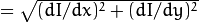
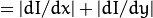
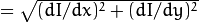
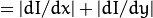

Image Processing
cuda::CannyEdgeDetector
-
class cuda::CannyEdgeDetector : public Algorithm
Base class for Canny Edge Detector.
class CV_EXPORTS CannyEdgeDetector : public Algorithm
{
public:
virtual void detect(InputArray image, OutputArray edges) = 0;
virtual void detect(InputArray dx, InputArray dy, OutputArray edges) = 0;
virtual void setLowThreshold(double low_thresh) = 0;
virtual double getLowThreshold() const = 0;
virtual void setHighThreshold(double high_thresh) = 0;
virtual double getHighThreshold() const = 0;
virtual void setAppertureSize(int apperture_size) = 0;
virtual int getAppertureSize() const = 0;
virtual void setL2Gradient(bool L2gradient) = 0;
virtual bool getL2Gradient() const = 0;
};
cuda::CannyEdgeDetector::detect
Finds edges in an image using the [Canny86] algorithm.
-
C++: void cuda::CannyEdgeDetector::detect(InputArray image, OutputArray edges)
-
C++: void cuda::CannyEdgeDetector::detect(InputArray dx, InputArray dy, OutputArray edges)
| Parameters: |
- image – Single-channel 8-bit input image.
- dx – First derivative of image in the vertical direction. Support only CV_32S type.
- dy – First derivative of image in the horizontal direction. Support only CV_32S type.
- edges – Output edge map. It has the same size and type as image .
|
|---|
cuda::createCannyEdgeDetector
Creates implementation for cuda::CannyEdgeDetector .
-
C++: Ptr<CannyEdgeDetector> cuda::createCannyEdgeDetector(double low_thresh, double high_thresh, int apperture_size=3, bool L2gradient=false)
| Parameters: |
- low_thresh – First threshold for the hysteresis procedure.
- high_thresh – Second threshold for the hysteresis procedure.
- apperture_size – Aperture size for the Sobel() operator.
- L2gradient – Flag indicating whether a more accurate
 norm  should be used to compute the image gradient magnitude ( L2gradient=true ), or a faster default norm  is enough ( L2gradient=false ). norm  should be used to compute the image gradient magnitude ( L2gradient=true ), or a faster default norm  is enough ( L2gradient=false ).
|
|---|
cuda::meanShiftFiltering
Performs mean-shift filtering for each point of the source image.
-
C++: void cuda::meanShiftFiltering(InputArray src, OutputArray dst, int sp, int sr, TermCriteria criteria=TermCriteria(TermCriteria::MAX_ITER + TermCriteria::EPS, 5, 1), Stream& stream=Stream::Null())
| Parameters: |
- src – Source image. Only CV_8UC4 images are supported for now.
- dst – Destination image containing the color of mapped points. It has the same size and type as src .
- sp – Spatial window radius.
- sr – Color window radius.
- criteria – Termination criteria. See TermCriteria.
|
|---|
It maps each point of the source image into another point. As a result, you have a new color and new position of each point.
cuda::meanShiftProc
Performs a mean-shift procedure and stores information about processed points (their colors and positions) in two images.
-
C++: void cuda::meanShiftProc(InputArray src, OutputArray dstr, OutputArray dstsp, int sp, int sr, TermCriteria criteria=TermCriteria(TermCriteria::MAX_ITER + TermCriteria::EPS, 5, 1), Stream& stream=Stream::Null())
| Parameters: |
- src – Source image. Only CV_8UC4 images are supported for now.
- dstr – Destination image containing the color of mapped points. The size and type is the same as src .
- dstsp – Destination image containing the position of mapped points. The size is the same as src size. The type is CV_16SC2 .
- sp – Spatial window radius.
- sr – Color window radius.
- criteria – Termination criteria. See TermCriteria.
|
|---|
cuda::meanShiftSegmentation
Performs a mean-shift segmentation of the source image and eliminates small segments.
-
C++: void cuda::meanShiftSegmentation(InputArray src, OutputArray dst, int sp, int sr, int minsize, TermCriteria criteria=TermCriteria(TermCriteria::MAX_ITER + TermCriteria::EPS, 5, 1))
| Parameters: |
- src – Source image. Only CV_8UC4 images are supported for now.
- dst – Segmented image with the same size and type as src (host memory).
- sp – Spatial window radius.
- sr – Color window radius.
- minsize – Minimum segment size. Smaller segments are merged.
- criteria – Termination criteria. See TermCriteria.
|
|---|
cuda::TemplateMatching
-
class cuda::TemplateMatching : public Algorithm
Base class for Template Matching.
class CV_EXPORTS TemplateMatching : public Algorithm
{
public:
virtual void match(InputArray image, InputArray templ, OutputArray result, Stream& stream = Stream::Null()) = 0;
};
cuda::TemplateMatching::match
Computes a proximity map for a raster template and an image where the template is searched for.
-
C++: void cuda::TemplateMatching::match(InputArray image, InputArray templ, OutputArray result, Stream& stream=Stream::Null())
| Parameters: |
- image – Source image.
- templ – Template image with the size and type the same as image .
- result – Map containing comparison results ( CV_32FC1 ). If image is W x H and templ is w x h, then result must be W-w+1 x H-h+1.
- stream – Stream for the asynchronous version.
|
|---|
cuda::createTemplateMatching
Creates implementation for cuda::TemplateMatching .
-
C++: Ptr<TemplateMatching> cuda::createTemplateMatching(int srcType, int method, Size user_block_size=Size())
| Parameters: |
- srcType – Input source type. CV_32F and CV_8U depth images (1..4 channels) are supported for now.
- method – Specifies the way to compare the template with the image.
- user_block_size – You can use field user_block_size to set specific block size. If you leave its default value Size(0,0) then automatic estimation of block size will be used (which is optimized for speed). By varying user_block_size you can reduce memory requirements at the cost of speed.
|
|---|
The following methods are supported for the CV_8U depth images for now:
- CV_TM_SQDIFF
- CV_TM_SQDIFF_NORMED
- CV_TM_CCORR
- CV_TM_CCORR_NORMED
- CV_TM_CCOEFF
- CV_TM_CCOEFF_NORMED
The following methods are supported for the CV_32F images for now:
cuda::bilateralFilter
Performs bilateral filtering of passed image
-
C++: void cuda::bilateralFilter(InputArray src, OutputArray dst, int kernel_size, float sigma_color, float sigma_spatial, int borderMode=BORDER_DEFAULT, Stream& stream=Stream::Null())
| Parameters: |
- src – Source image. Supports only (channles != 2 && depth() != CV_8S && depth() != CV_32S && depth() != CV_64F).
- dst – Destination imagwe.
- kernel_size – Kernel window size.
- sigma_color – Filter sigma in the color space.
- sigma_spatial – Filter sigma in the coordinate space.
- borderMode – Border type. See borderInterpolate() for details. BORDER_REFLECT101 , BORDER_REPLICATE , BORDER_CONSTANT , BORDER_REFLECT and BORDER_WRAP are supported for now.
- stream – Stream for the asynchronous version.
|
|---|
cuda::blendLinear
Performs linear blending of two images.
-
C++: void cuda::blendLinear(InputArray img1, InputArray img2, InputArray weights1, InputArray weights2, OutputArray result, Stream& stream=Stream::Null())
| Parameters: |
- img1 – First image. Supports only CV_8U and CV_32F depth.
- img2 – Second image. Must have the same size and the same type as img1 .
- weights1 – Weights for first image. Must have tha same size as img1 . Supports only CV_32F type.
- weights2 – Weights for second image. Must have tha same size as img2 . Supports only CV_32F type.
- result – Destination image.
- stream – Stream for the asynchronous version.
|
|---|
Help and Feedback
You did not find what you were looking for?
- Ask a question on the Q&A forum.
- If you think something is missing or wrong in the documentation,
please file a bug report.